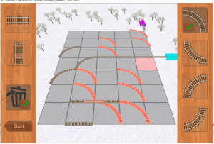

Reference
Main programmer for server In-počasí | www.in-pocasi.cz
- Web developer (PHP, XML, JavaScript)
- Database administrator (MySQL, PSQL)
- C++ developer
Ventusky.com | www.ventusky.com

- Web developer (PHP)
- Database administrator (MySQL, PSQL)
- C++ developer
- bash scripting
In-počasí - iOS application | iTunes
- Objective-C
Meteomapy - iOS application | iTunes
- Objective-C
Bank Robbery: Great Western Heist - iOS game | iTunes
- C++
- OpenGL ES 2.0
- Objective-C
Banka ve vašem městě byla přepadena místní gangsterskou bandou. Jako městský šerif musíte vzít zákon do vlastních rukou. Zachraňte rukojmí a postřílejte bandity dříve, než i s lupem utečou. Sesbírejte zpět ukradené finanční jistoty obyvatel vašeho městečka a zachraňte vše před bankrotem.
Angry Curves - iOS game | iTunes
- C++
- OpenGL ES 2.0
- Objective-C
You can see Gameplay video
World of Trains - iOS game | Web | iTunes

- C++
- OpenGL ES 2.0
- Objective-C
Reviews:
appparade.cz (Czech) | svetaplikaci.cz (Czech) | smartmania.cz (Czech)
Numerical model data visualisation | Web
- C++
- bash scripting
Lua Wrapper for C++ | GitHub
- C++
- Lua
Game engine for PC / iOS
- Abstract design capable of handling OpenGL 4.0 / OpenGL ES 2.0 / OpenGL ES 3.0 (and possibility to add DirectX)
- UI sytem
- VFS sytem
- OpenCL support
- Particle system
- LuaWrapper
Game database | www.cdh.cz
- PHP
- MySQL
- JavaScript
Other projects